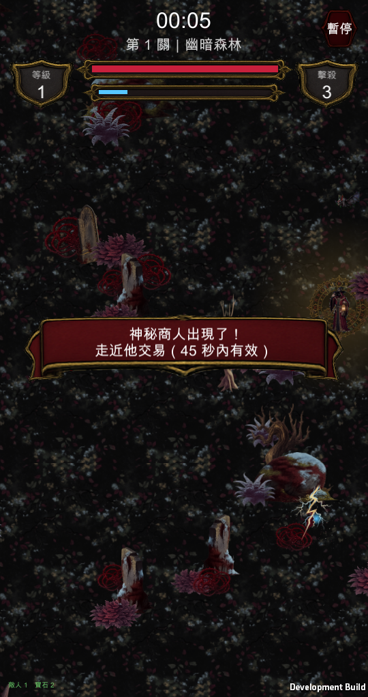
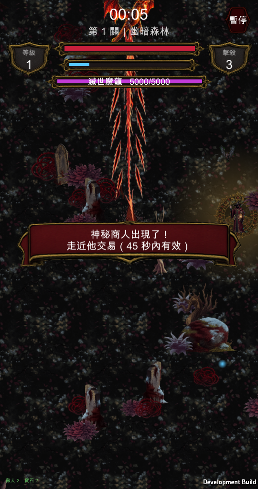
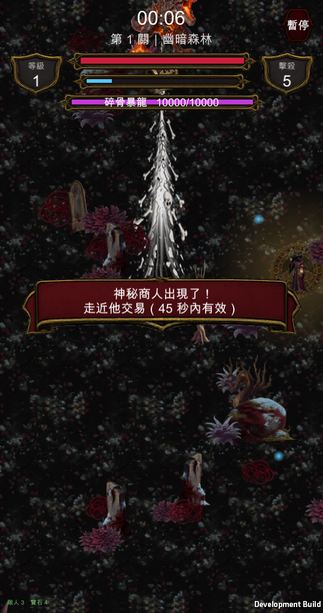
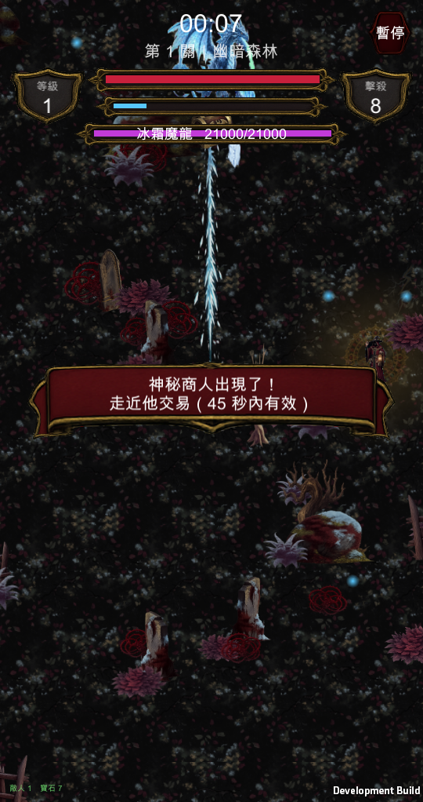
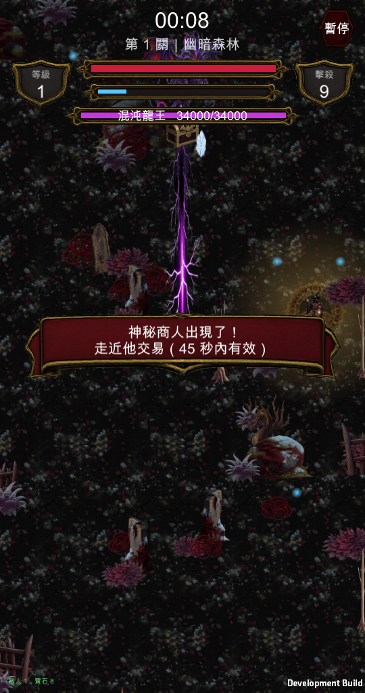
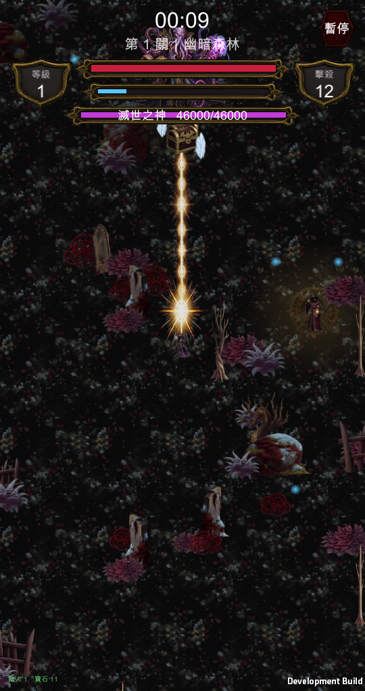
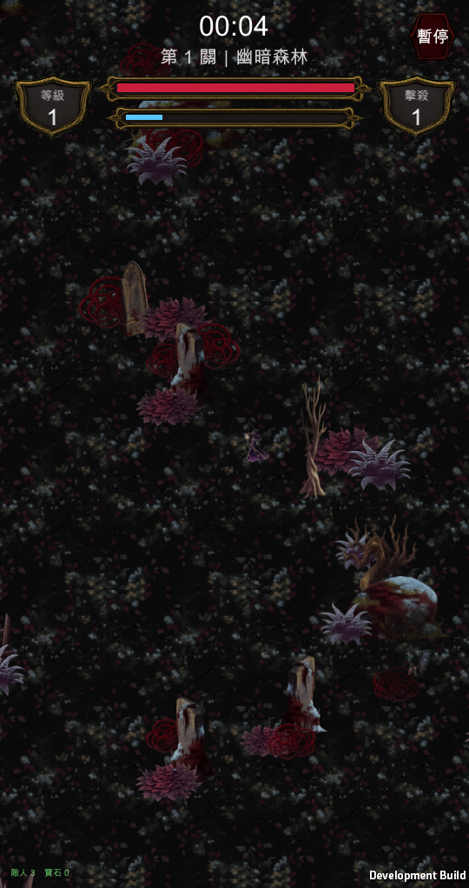

動畫 ＋ 兩層光暈
已套用
下面全部是實機畫面，不是素材預覽。夜巫用你選的 v1、商人加了光暈、五隻魔王各有各的衝鋒預告。







衝鋒預告第一版直接把「要多長」塞進縮放值，結果畫出來是 3.2 倍長、整條射穿畫面——看起來像一條細線，其實是被拉超長。素材 512×160、每單位像素取貼圖高度，所以它本身的尺寸就是 3.2×1，要先除掉。
暴風雪牆、敵方彈幕、斬擊都各踩過一次，這是第四次。這次順手把量測寫進驗證流程（畫出長度 vs 實際距離），下次一發生就會被量出來。
這一批加上先前的彈丸阻擋（穿透彈除外）都在裡面，Xcode 直接 build 就好。